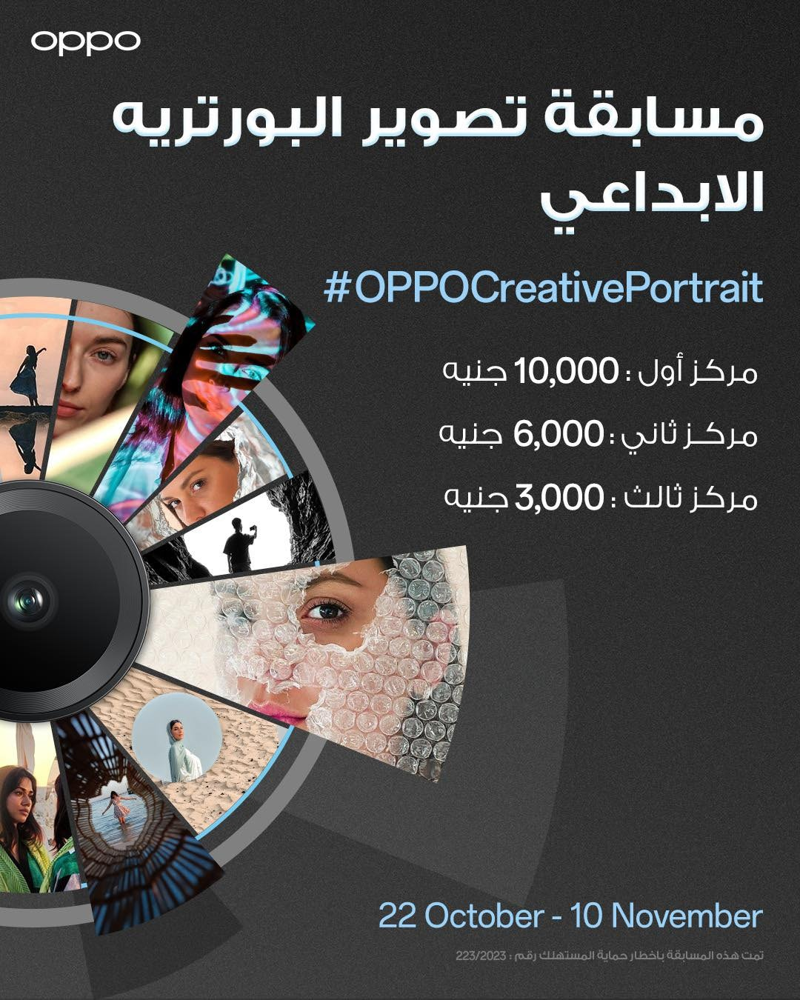
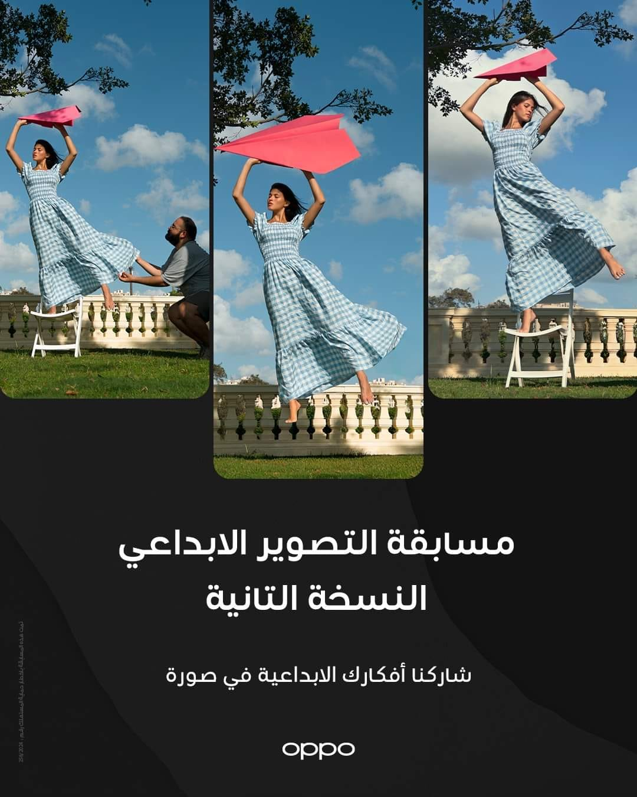
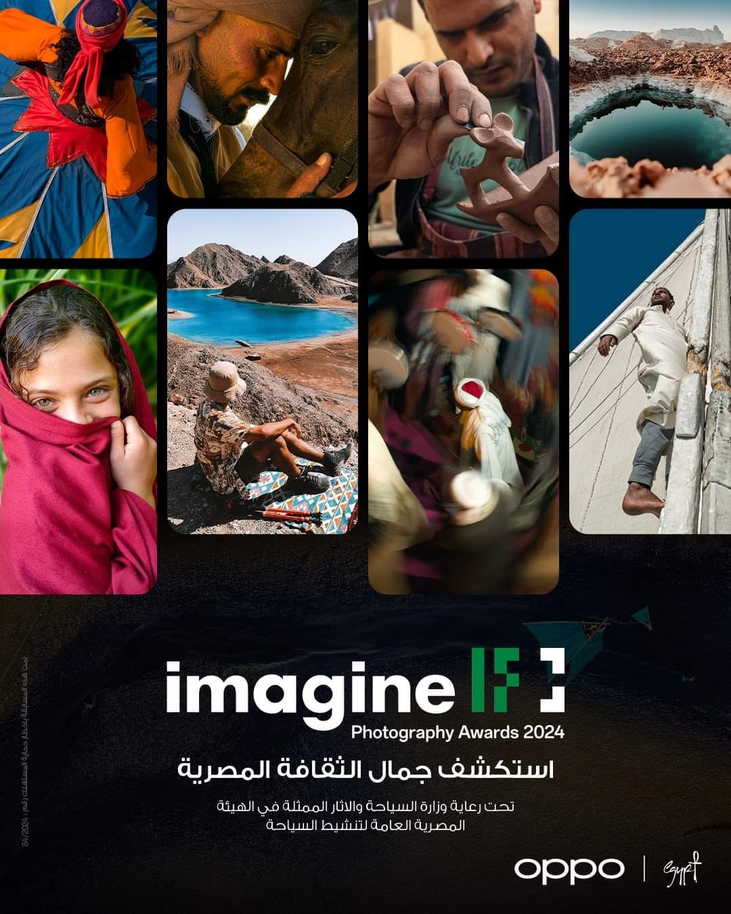
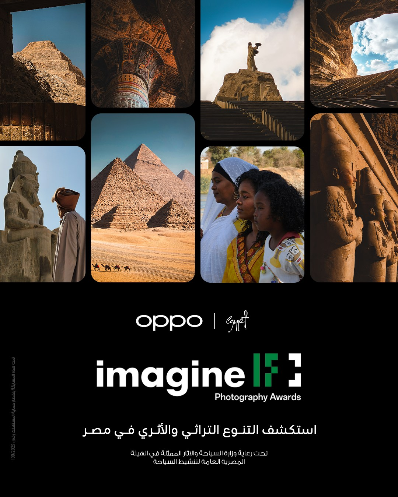
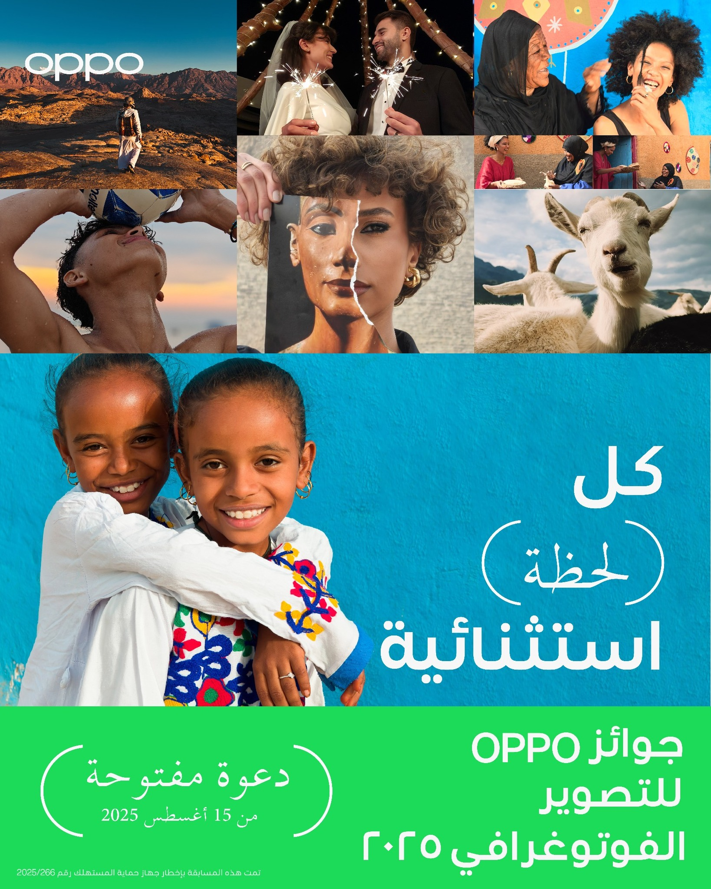
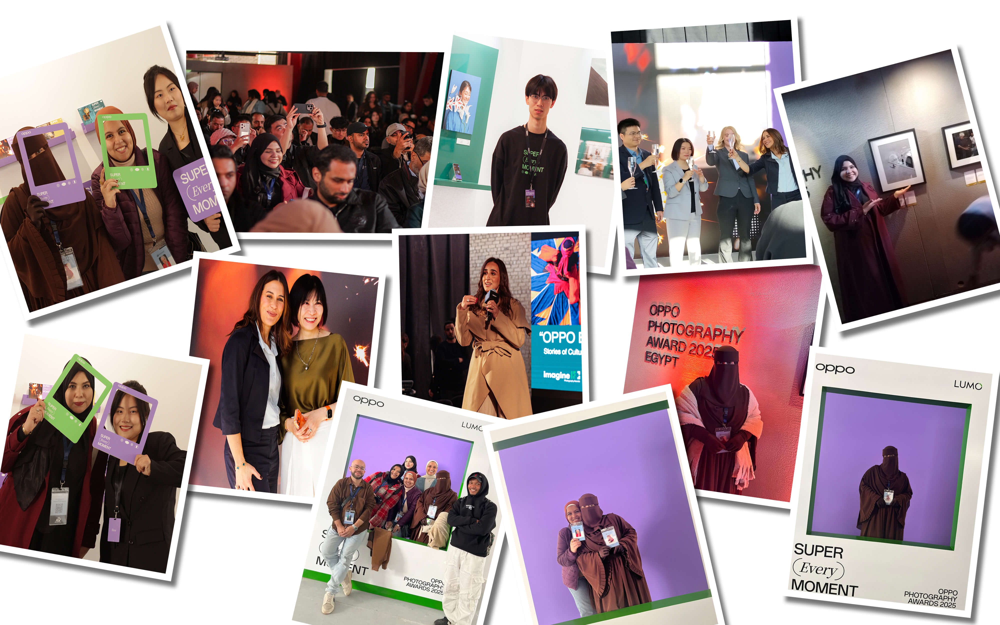

جاءت مسابقة تصوير البورتريه سنة 2023 بالتعاون مع OPPO Egypt كخطوة حقيقية لدعم المصورين المبدعين ومنحهم مساحة للتعبير عن أفكارهم الفنية بحرية. لم تكن المسابقة مجرد التقاط صورة بورتريه، بل كانت دعوة لتقديم قصة وشعور ورؤية مختلفة من خلال الصورة. شارك المصورون بأعمال تعكس قوة الفكرة والإبداع البصري، وتم تقييم المشاركات بعناية لاختيار أفضل الصور، ثم إجراء تصويت على المراكز الأولى، مع تقديم جوائز نقدية تقديرًا للجهد والتميّز. هذه التجربة عكست روح الشراكة بين OPPO و Another World Photography في دعم الإبداع الحقيقي وتمكين المواهب.

في عام 2024، واصلنا شراكتنا مع OPPO Egypt من خلال إطلاق مسابقة تصوير فوتوغرافي متخصصة في فن البورتريه، استهدفت إبراز الإبداع الحقيقي للمصورين وتسليط الضوء على قوة الفكرة قبل الصورة. ركزت المسابقة على تقديم بورتريهات غير تقليدية تعكس رؤية فنية عميقة وشخصية، بعيدًا عن القوالب المعتادة. شهدت المسابقة مشاركة واسعة من المصورين عبر مختلف المنصات، وتم اختيار أفضل الأعمال من خلال لجنة تحكيم متخصصة، تلاها تصويت لاختيار المراكز الثلاثة الأولى، مع تقديم جوائز قيمة دعماً للمواهب وإيمانًا بدور التصوير في التعبير البصري المؤثر.

في إطار تعزيز دور التصوير الفوتوغرافي كأداة فعالة في إبراز الهوية المصرية، جاءت مسابقة عام 2024 كثمرة تعاون قوي بين OPPO Egypt ووزارة السياحة والآثار وبالتنظيم من جروب Another World Photography. تُعد هذه المسابقة واحدة من أكبر وأهم مسابقات التصوير التي أُقيمت خلال العام، حيث استهدفت تقديم صورة متكاملة عن الثقافة المصرية من خلال عدة محاور إبداعية شملت وجوه مصرية، والتصوير المعماري، والطبيعة في مصر، والعادات والتقاليد، والصناعات والحرف المصرية. شهدت المسابقة مشاركة واسعة من المصورين من مختلف أنحاء الجمهورية، مع مستوى فني مرتفع يعكس قوة وتأثير مجتمع AWP، وقدرته على إدارة مسابقات ضخمة ذات معايير احترافية عالية. أتاح هذا التعاون للمواهب فرصة حقيقية للوصول إلى جمهور واسع عبر منصات OPPO الرسمية، مع جوائز كبرى جمعت بين الدعم المادي والتقني، مما عزز من قيمة التجربة ورسّخ مكانة Another World Photography كأحد أقوى المجتمعات الفوتوغرافية في مصر، وشريك موثوق للعلامات التجارية والمؤسسات الرسمية في تقديم محتوى بصري يعكس روح وهوية الوطن.

في أبريل 2025، أطلقنا واحدة من أقوى مسابقات التصوير الفوتوغرافي بالتعاون مع OPPO Egypt وبرعاية وزارة السياحة والآثار ممثلة في الهيئة العامة المصرية لتنشيط السياحة، في خطوة تهدف إلى دعم وتنشيط السياحة المصرية من خلال قوة الصورة وتأثيرها. ركزت المسابقة على إبراز جمال مصر وتنوعها الثقافي والسياحي، من خلال عدسة المصورين وقدرتهم على تقديم رؤية مختلفة للأماكن والوجوه والتجارب السياحية. شهدت المسابقة تفاعلًا غير مسبوق ومنافسة قوية بين آلاف المشاركين، حيث لعب مجتمع Another World Photography دورًا محوريًا في الوصول إلى أكثر من 5 ملايين شخص عبر مختلف المنصات، مما ساهم في نشر المحتوى السياحي على نطاق واسع وبأسلوب بصري حديث يتماشى مع رؤية OPPO في دعم الإبداع وصناعة المحتوى. وقد عكست النتائج المستوى العالي للمشاركات وقوة التعاون بين العلامة التجارية والمجتمع الفوتوغرافي، مؤكدة قدرة AWP على تنفيذ حملات جماهيرية مؤثرة تخدم أهداف السياحة الوطنية وتُبرز مصر بصورة تليق بها محليًا ودوليًا.

استكمالًا لمسيرة التعاون المثمرة مع OPPO Egypt خلال عام 2025، جاءت مسابقة OPPO Egypt Photography Awards 2025 لتكون واحدة من أضخم المبادرات الفوتوغرافية التي استهدفت توثيق اللحظات الاستثنائية في مصر من منظور إنساني وإبداعي معاصر. ركزت المسابقة على فكرة أن كل لحظة تحمل قصة، من خلال ثمانية محاور متنوعة شملت الحياة اليومية، والبورتريه، والشباب، والفرح، والحكايات، والتواصل الإنساني، وصولًا إلى الأماكن الاستثنائية التي تعكس جمال مصر وتنوعها الثقافي والسياحي. لعب مجتمع Another World Photography دورًا محوريًا في إدارة وتنظيم ونشر المسابقة، سواء عبر المنصات الرقمية أو من خلال الأنشطة الميدانية، حيث تم إطلاق جولات تصوير حصرية بالتعاون مع OPPO، أُتيحت خلالها الفرصة للمشاركين لاستخدام أحدث هواتف OPPO لتوثيق لحظاتهم الخاصة والمشاركة بها في المسابقة. وقد ساهم هذا التكامل بين المسابقة الرقمية والتجربة الواقعية في رفع مستوى التفاعل والوصول إلى شريحة واسعة من المبدعين، مع تأهل الفائزين تلقائيًا للمنافسة على الجوائز العالمية، مما عزز من حضور مصر على خريطة التصوير الفوتوغرافي العالمية وأكد مكانة Another World Photography كشريك استراتيجي قادر على تنفيذ مبادرات إبداعية كبرى تجمع بين التكنولوجيا، القصة الإنسانية، والتأثير المجتمعي.

واختُتم عام 2025 بحدث استثنائي تمثل في مؤتمر OPPO Photography 2025 Year Awards، والذي جاء تتويجًا لعام كامل من التعاون الإبداعي بين OPPO Egypt وAnother World Photography. شهد المؤتمر توزيع الجوائز الرسمية على الفائزين في مسابقات التصوير المختلفة، إلى جانب تسليط الضوء على دور مجتمع Another World Photography في تمكين الشباب وجذبهم للمشاركة الفعّالة في مبادرات OPPO الفنية والثقافية. كما أتاح الحدث للمشاركين فرصة زيارة معرض OPPO لأفضل الأعمال الفوتوغرافية المختارة خلال العام، والتفاعل المباشر مع شركاء OPPO وصناع القرار في مجال التصوير والتكنولوجيا، فضلًا عن تنظيم ورش عمل مبسطة ركزت على تطوير المهارات البصرية وربط الإبداع بالتقنيات الحديثة. لم يكن المؤتمر مجرد حفل توزيع جوائز، بل منصة حقيقية للاحتفاء بالمواهب الشابة، وبناء جسور تواصل بين المبدعين والعلامات العالمية، وترسيخ مكانة Another World Photography كشريك مجتمعي مؤثر قادر على صناعة تجارب إبداعية متكاملة تمتد من المسابقة إلى الواقع، ومن الصورة إلى التأثير.